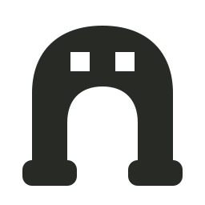

반복하는 업무 하나,
AI로 바꿔보면 어떨까요?
아이디어 0개
첫 번째 아이디어의 주인공이 되어주세요.
Google Form에 남긴 한 줄이 이곳의 새로운 별이 됩니다.
구글폼에 남긴 아이디어를 큰 화면으로.
모두의 한마디가 우리 부스의 풍경이 됩니다.
반복하는 업무 하나,
AI로 바꿔보면 어떨까요?
잘 쓰는 프롬프트를
함께 나누고 싶어요.
작은 시도도
좋은 시작이니까!

행사명과 아이콘으로 우리 부스만의 보드를 만드세요.
Google Form에 연결된 시트에서 아이디어와 작성자를 불러와요.
우주형과 카드형을 바꿔가며 새로 도착한 생각을 만나보세요.
Google Form에 남긴 한 줄이 이곳의 새로운 별이 됩니다.